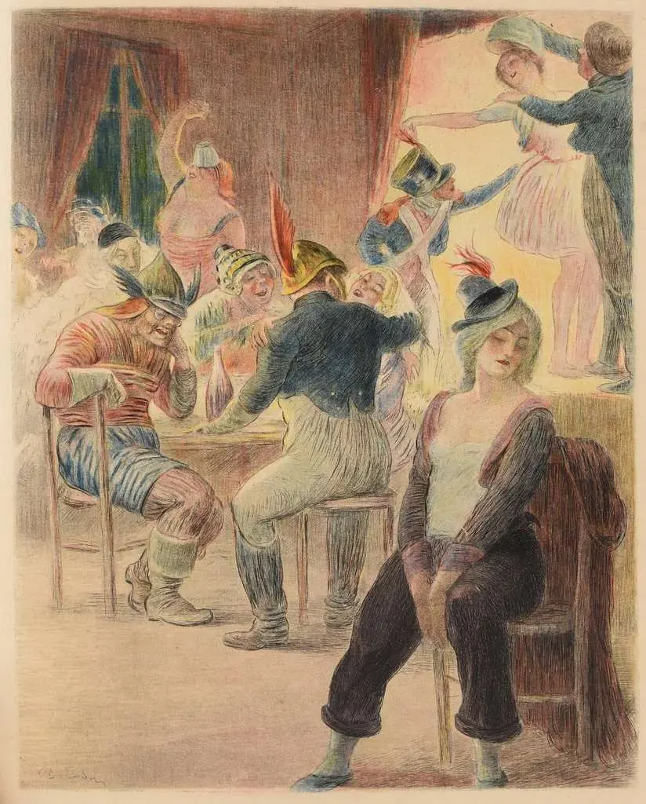

UNA RECOMENDACIÓN LITERARIA
Madame Bovary
Una vida imaginada. Una realidad que nunca está a la altura.

Charles Léandre / Eugène Decisy. Dominio público.
01 / LA NOVELA
Una historia sobre el deseo y la insatisfacción
Publicada en , Madame Bovary es una de las grandes novelas de Gustave Flaubert. A través de la vida de Emma, el autor construye un retrato de las aspiraciones, las frustraciones y las contradicciones de la sociedad de su tiempo.
La obra destacó por su estilo narrativo y por la atención al detalle con la que Flaubert describe tanto los escenarios como los pensamientos de sus personajes. Su publicación provocó una gran polémica y llevó al autor a enfrentarse a un proceso judicial por inmoralidad.
02 / EL ARGUMENTO
Entre la fantasía y la realidad
Emma Bovary desea una vida apasionada y extraordinaria, muy alejada de la monotonía de su entorno. Su búsqueda de emociones y de una existencia diferente la llevará a tomar decisiones que cambiarán su destino.
Tras casarse con Charles Bovary, un médico de provincias, Emma descubre que el matrimonio y la vida cotidiana no se parecen a las historias románticas que ha imaginado. En su intento por escapar de esa realidad, se adentra en relaciones amorosas y gastos que acabarán teniendo graves consecuencias.
03 / EL PERSONAJE
Emma Bovary
Inconformista, soñadora y contradictoria, Emma es un personaje que sigue generando preguntas. Sus deseos chocan constantemente con los límites sociales y personales que encuentra a su alrededor.
Su carácter está marcado por una imaginación alimentada por las novelas románticas que ha leído. Emma busca en el amor, el lujo y las apariencias una forma de alcanzar la felicidad, pero ninguna de esas experiencias consigue satisfacer sus expectativas durante demasiado tiempo.
04 / POR QUÉ LEERLA
Una novela que sigue interpelándonos
Más allá de su contexto histórico, Madame Bovary habla de algo reconocible: la distancia entre la vida que tenemos y la que imaginamos. Una lectura especialmente interesante por la precisión de su escritura y la complejidad de sus personajes.
También invita a reflexionar sobre la influencia de las expectativas culturales, el peso de las convenciones sociales y la dificultad de encontrar satisfacción en una realidad que nunca parece estar a la altura de nuestros deseos. Su vigencia es una de las razones por las que continúa siendo una lectura imprescindible.
05 / FICHA DEL LIBRO
La obra
- Autor
- Gustave Flaubert
- Publicación
- Género
- Novela realista
- Idioma original
- Francés